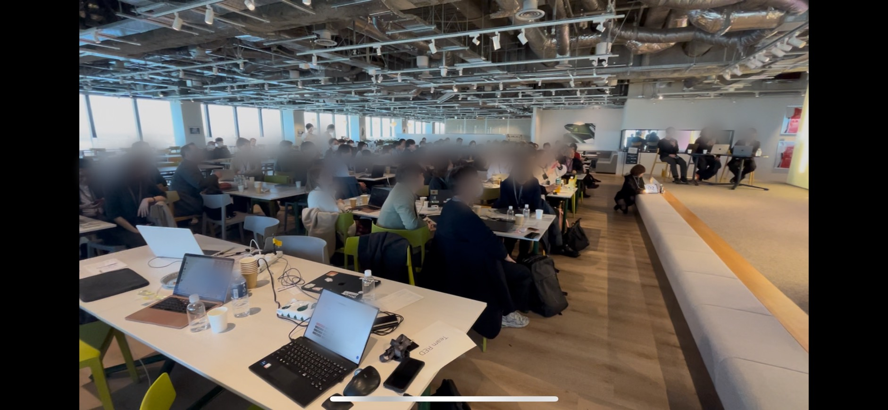
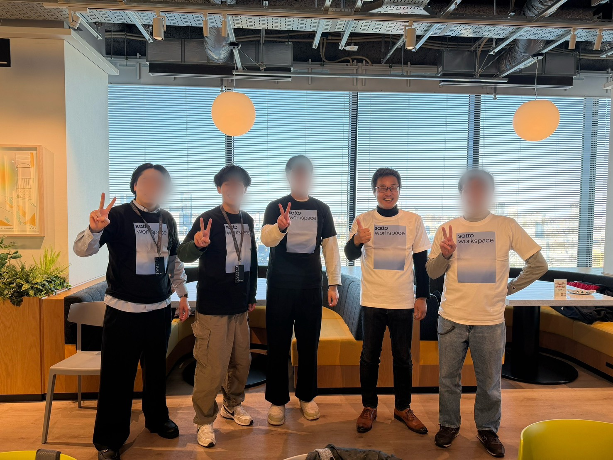
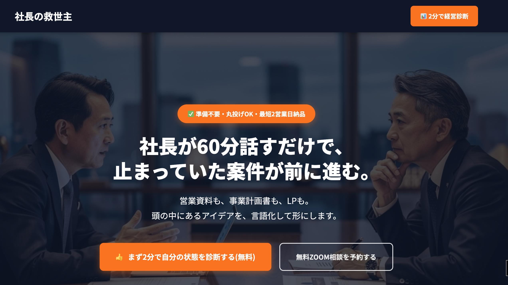
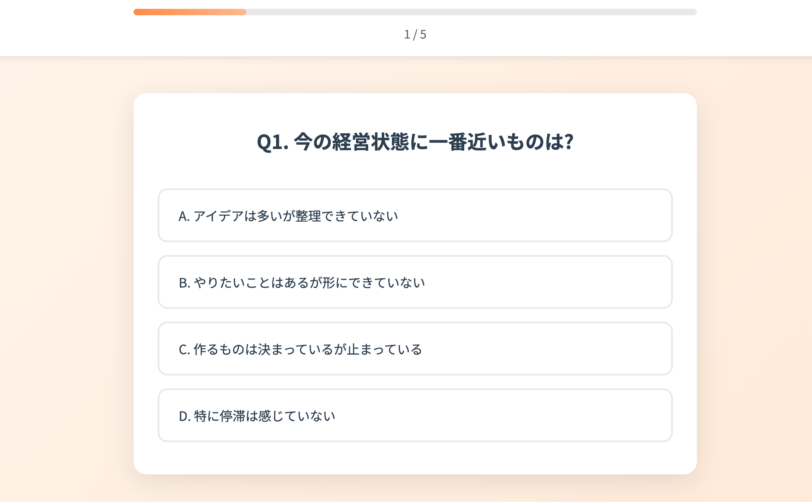
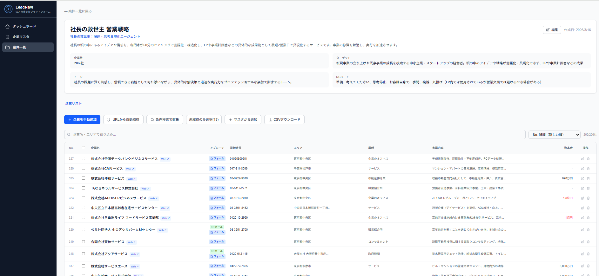

AI Business Automation
AI業務自動化（AIDX化）で、
人的コストを丸ごと削減する。
営業リスト作成、メール送付、リサーチ、資料作成……
毎日同じPC作業を人力でこなしていませんか？
その作業、AIツールにまかせれば、月30万円以上のコスト削減も現実です。
経営者目線×AI実務スキルを持つ担当が、あなたの業務を一緒に整理します。
Problems
毎日同じPC作業を、結局スタッフの手でやっている
「ツール化したい」と思いながら、費用が怖くて踏み出せない
外注したら現場を知らない担当者が来て、話が噛み合わなかった
AIを使いたいけど、何から始めればいいか整理できていない
これらは全部、今すぐ解決できる課題です。
弊社はその「業務の整理」から一緒にやります。
Solutions
AIと自動化の組み合わせで、今まで「人力に頼るしかなかった」PC作業のほとんどをツール化できます。
ターゲットリストの収集からメール送信まで、一連の営業フローを自動化します。
商品情報や競合データを外部サイトから自動収集。手動リサーチを完全に置き換えます。
画像を入れるだけで複数パターンの加工画像を自動出力。バナー・商品画像に対応。
商品説明・提案書などのドキュメントをAIで自動生成。品質を保ちながら大幅に時間短縮。
SNS投稿やメルマガの文面をAIが下書き。編集するだけで高品質な発信が継続できます。
人力に頼っていたリサーチ業務全般を、AIツールで効率化。判断精度の高い仕上がりに。
全てのツールにAIのAPIを実装しているため、
単純な自動化ではなく「判断精度が高い」仕上がりになります。
Why Now
以前の常識
試作だけで数十万〜数百万円。多くの中小企業がツール化を諦めてきた。
今の時代
生成AIを活用した開発フローにより、試作コストが劇的に低下。「まず動くものを見てから判断」が可能に。
さらに、従業員がいる会社には「業務改善助成金」などの補助金活用も検討できます。
Process
今、人力・人的コストがかかっている業務を一緒に整理します。うまく言語化できなくてもOK。経営者目線でヒアリングします。
コストダウン効果が大きい順に整理し、費用対効果を試算してご提示します。
まず動くものを作ります。見てから判断できるので、リスクが低い。
実際の業務フローに組み込んで稼働。運用後のサポートも対応します。
Strengths
佐藤充泰 （さとう あつひろ）
合同会社サンボックス 代表
経営者歴10年以上。EC物販で月商1,000万円を経験し、会社清算・自己破産からの復活を経て現在はAI業務自動化の専門家として活動。2026年3月、ソフトバンク主催の生成AIハッカソン（60名参加）で3位入賞。
弊社の担当（代表：佐藤充泰）は、こんな人間です。
会社を潰した経験もある、修羅場をくぐったリアルな経営者です。コスト感覚・現場感覚が体に染み込んでいます。技術屋ではなく「経営者目線」で話ができます。


3位入賞2026年3月、ソフトバンク主催・60名参加のハッカソンで3位入賞。AIを「人任せ」にせず、自分で使いこなせるスキルを持っています。
営業出身で、現場の「うまく説明できない課題」を整理して言語化することが得意です。試作コストを圧倒的に低く抑えられます。
経営経験豊富で、言語化のプロで、AIスキルも受賞レベル。
この3つが揃った担当は、大手SIerにはなかなかいません。
Pricing
実際に動くものを作成。見てから判断できるので、リスクが低い。
※大規模な場合は別途お見積もり
小規模ツール（単機能）
中規模ツール（複数機能連携）
大規模・要相談
サーバー維持費、軽微な修正、トラブル対応など
※実費がかからない場合は無料の場合もあります
💡 補助金活用も可能：従業員がいる企業の場合、業務改善助成金などが活用できるケースがあります。
Works
顧客事例はこれから積み上げます。まず「どんなものを作れるか」を実際のアウトプットでご確認ください。

中小企業経営者向けサービスのLP。AIで生成したビジュアルと診断アプリを組み合わせたコンバージョン設計。

5問のQ&Aで経営の課題を即診断。AIが回答を分析し、最適なアクションを提案するインタラクティブなアプリ。

リスト自動収集・メール文章生成・自動送信を一気通貫で実行。弊社の営業業務で実際に稼働中のツール。
現在、初期モニター企業を3社限定で募集しています。モニター企業には通常より大幅に低コストでご対応します。
FAQ
試作（プロトタイプ）は2〜6万円、本番開発は小規模で10万円〜、中規模で30万円〜です。まずは無料相談で業務内容をヒアリングし、概算をお出しします。
はい、可能です。試作を見てから本開発に進むかどうかご判断いただけます。リスクを最小限に抑えて検討できます。
従業員がいる企業の場合、業務改善助成金などが活用できるケースがあります。実費ベースでのお見積もりも対応しますので、ご相談ください。
はい。ツール稼働に必要なサーバー維持費、軽微な修正、トラブル対応などを含めた保守費として、月3万円が目安です。実費がかからない場合は無料の場合もあります。
小規模ツールで1ヶ月、中規模で2〜3ヶ月が目安です。まずは試作を2週間程度で作成し、方向性を確認してから本開発に進みます。
①無料相談 → ②業務洗い出し・要件整理 → ③試作制作 → ④本開発 → ⑤納品・テスト → ⑥運用開始・保守対応、という流れです。
試作段階では柔軟に対応可能です。本開発開始後も、追加費用が発生する場合がありますが、相談しながら進められます。
PC上で行う定型作業（リスト作成、メール送信、データ収集、画像加工など）は、ほとんどツール化可能です。まずはご相談ください。
物販・EC・不動産・士業・営業・就労支援など幅広く対応しています。まずは面談でご状況をお聞かせください。
はい、API連携が可能なシステムであれば対応できます。具体的なシステム名をお聞かせいただければ、事前に実現可能性を確認します。
全く問題ありません。弊社代表も営業出身で、専門用語を使わずに分かりやすく説明します。サーバーの準備、ツールの設置、使い方のレクチャーまで、全てこちらで対応します。
はい。月額保守契約に含まれており、軽微なバグ修正、使い方の質問対応、機能の微調整などに対応します。
はい、可能です。追加開発として別途お見積もりさせていただきます。
一切ありません。まずは業務の棚卸しをして、「何ができるか」を一緒に整理するだけの場です。無理に契約を勧めることはありません。
「どの業務がツール化できるか、まだわからない」
「費用がいくらかかるか不安」
そのまま話しに来てください。
相談は無料です。業務の棚卸しをするだけでも、新しい気づきがあります。
担当：佐藤充泰（合同会社サンボックス代表）
押し売りはしません。まず「何ができるか」を一緒に整理するだけの場です。